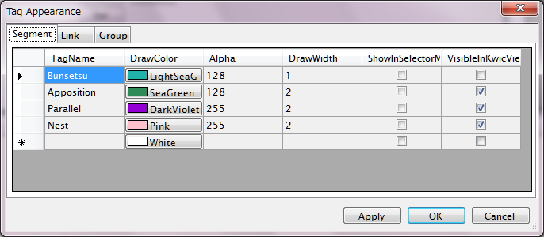
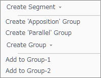
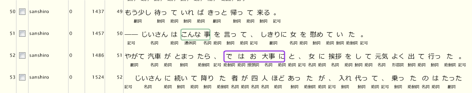

(Rev.272～)
KwicViewおよびDependency Panelにおけるアノテーション要素の表示方法を、タグの名称ごとに設定することができます。 これにより、必要なタグのみを見たり、特定のタグを強調表示することができます。
メインメニューの"Options"-"TagAppearance"をクリックします。次のようなダイアログが開きます。

ダイアログはタグの種類（Segment, Link, Group）に応じた３つのタブを持っており、それぞれが設定編集のための 設定表を含んでいます。この設定表に変更を加え、OKボタンを押すことで、要素の表示方法が変更されます。
- 新しい行を追加するには、最下行にタグ名を入力します。
- 行を削除するには行を選択してDelキーを押します。
設定可能な表示パラメータは次の通りです（タグの種類ごとに異なります）。
| パラメータ | 意味 | Segment | Link | Group |
| TagName | タグの名称 | ✓ | ✓ | ✓ |
| DrawColor | 描画色 | ✓ (矩形枠の色） |
✓ (線の色） |
|
| Alpha | 描画色の透過度(0～255) | ✓ | ✓ | |
| DrawWidth | 線描画の場合の線の太さ(point) | ✓ （矩形枠の幅） |
✓ （線の幅） |
|
| ShowInSelectorMenu | タグを選択するポップアップメニューのトップレベルにリストするか否か | ✓ | ✓ | |
| VisibleInKwicView | Kwic Viewにおいて表示対象とするか否か | ✓ | ✓ | ✓ （現在は非対応） |
- 文節Segmentを表す"Bunsetsu"は、タグ選択メニューからアサインすることができませんので、 ShowInSelectorMenu値はデフォルトでOFFになっています。文節は切断・結合によってのみ操作可能です。
- Groupの描画色は内部処理で決定されますので設定できません。同じGroupに属するSegmentの矩形内部が既定の色で 塗り分けられます。
ShowInSelectorMenuについて
Dependency PanelでSegment, Groupを追加するときのポップアップメニューは、デフォルトで次のようになっています。

このメニューでは"Create Segment ▼", "Create Group ▼"を選択すれば、現在有効なTagSet中のすべてのタグを選択できますが、そうすると マウス操作が3クリックとなってしまいます。よく使用するタグについてこのパラメータをONにしておけばこのポップアップメニューの トップレベルにそのタグが表示されますので、2クリックでアサインすることができるようになります。
デフォルトでは、Segmentについては"Nest", Groupについては"Apposition", "Parallel"がONになっています。
VisibleInKwicViewについて
メインメニューの"View"-"Annotation"またはツールバーの をクリックすることにより、
現在表示されているKwic Viewの内容（文集合）に付与されているアノテーション要素をロードし、表示する機能がありますが、
この時にロードするタグ種類はここでチェックをONにしたものに限られます。
つまり、Kwic Viewにおけるアノテーション一覧にフィルタをかけることができます。
をクリックすることにより、
現在表示されているKwic Viewの内容（文集合）に付与されているアノテーション要素をロードし、表示する機能がありますが、
この時にロードするタグ種類はここでチェックをONにしたものに限られます。
つまり、Kwic Viewにおけるアノテーション一覧にフィルタをかけることができます。
例えば、Bunsetsu SegmentをOFFにすると次のような表示になり、（Cabochaインポートにより全面に付与されている多数の）Bunsetsuアノテーションを隠すことができます。

- 現在の所、Kwic ViewはGroup表示に対応していませんが、Groupに含まれるSegment -- AppositionやParallelなど -- は表示できます。
- このパラメータ設定は、再度アノテーションロードを行う時に反映されます。
設定ファイルについて
Tag Appearance設定は、単一のファイルにXML形式で保存されます。ファイルパスは、ユーザーごとのアプリケーションローカル設定の下のChaki.NET\UserSettingsTagAppearance.xmlです。（Windows 7の場合、 \Users\<UserName>\AppData\Chaki.NET\UserSettingsTagAppearance.xml)
ChaKi.NETが起動していない状態でこのファイルを削除すると次の起動時からデフォルト設定に戻ります。
また、他のユーザーの設定ファイルをコピーすれば設定を共有することもできます。
このことからわかる通り、Tag Appearance設定は、ChaKi.NETにおいてはデータベース中ではなく、ユーザーごとのローカルファイルで管理しています。 Tagとの一致判定は名前のみで行っており、TagSetやバージョンには無関係となっています。